I help organizations across technology, legal, and enterprise sectors turn marketing into a genuine driver of growth. My career began in journalism and media before evolving through public relations into executive-level brand and communications leadership — a foundation that shapes how I build narratives that earn trust at boardroom level. My focus today is Saudi Arabia and the wider GCC, where I align every strategy with the ambitions of Vision 2030 — grounded in a PhD in Media & Communication Sciences.
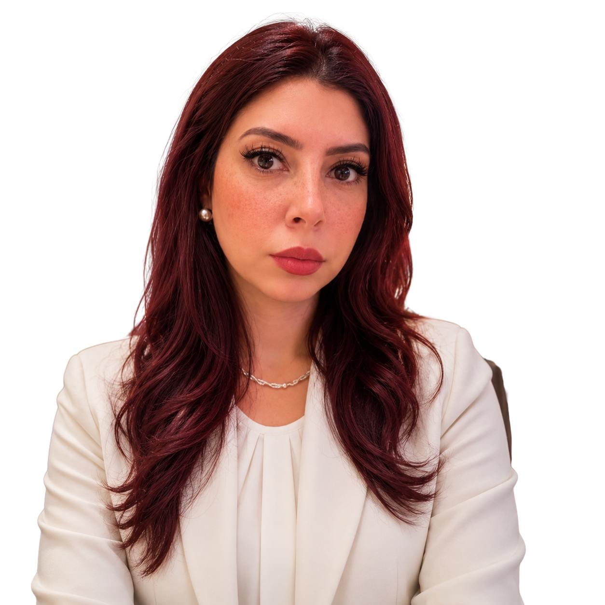
Marketing and communications are strategic growth functions—not support roles. Over the past 13 years, I've built brands, developed marketing strategies, led corporate communications, and managed campaigns across technology, legal services, real estate, publishing, media, and the nonprofit sector in both Egypt and Saudi Arabia.
My experience spans the full marketing spectrum—from brand positioning, content strategy, and digital marketing to public relations, corporate communications, employer branding, and marketing leadership. I've led marketing initiatives for organizations including AIC2, MG Law, EIPD Publishing House, EG GATE, and Menassat Developments, while also delivering independent branding and content quality projects through my consulting work.
My career began in journalism, a background that shaped the way I approach marketing today. It taught me to research deeply, verify information, understand audiences, and build credible brand narratives—skills that continue to strengthen every strategy I develop.
Alongside my professional career, I hold a PhD in Media & Communication Sciences from Ain Shams University, have taught marketing, advertising, and public relations at university level, authored a book on digital marketing, and have been invited to speak in media as a marketing expert.
Today, my focus is helping organizations build stronger brands, clearer market positioning, and sustainable business growth by combining strategic thinking with hands-on execution.
I ground every recommendation in research, competitive intelligence, and measurable outcomes — never assumption.
I deliver strategy, brand identity, copywriting, PR, and budget ownership end-to-end myself — not handed off.
13 years, six sectors — journalism, media, HR, technology, legal, real estate, publishing, and academia — built deliberately, not by accident.
If this sounds like the kind of strategic partner your organization needs, I'd welcome the conversation.
I bring an integrated capability spanning strategy, execution, and academic-grade research — grounded in a journalism-and-media foundation and engaged individually or as a full brand transformation.
I help organizations translate market analysis into a clear, executable growth strategy — from national campaigns to enterprise-wide roadmaps.
I help organizations reposition their brand and build identity systems and guidelines that hold up as they scale.
I help leadership teams communicate with authority — executive messaging, corporate profiles, and stakeholder communications.
I help organizations grow — building the proposals, pitch materials, and business development strategy that win new work.
I help organizations build integrated digital and content strategy, from demand generation through to campaign execution.
I help organizations manage press and media relations, event strategy, and public-facing communications — informed by my own background as a journalist and broadcast editor.
I help organizations, independently and on a project basis, with brand identity and market-entry strategy across the GCC.
I help leadership teams sharpen their positioning, read the competitive landscape, and prioritize where to grow next.
I help the next generation of marketers think strategically — teaching at university level and publishing original research.
Not sure which of these fits what you need? Let's talk it through.
Dr. Malak Ismail is a recognized expert voice featured across national media platforms, sharing strategic perspectives on brand building, digital marketing, tourism promotion, and reputation management. Her contributions reflect a unique combination of academic depth, market experience, and strategic communication expertise — helping organizations understand how reputation, storytelling, and digital presence influence global perception.
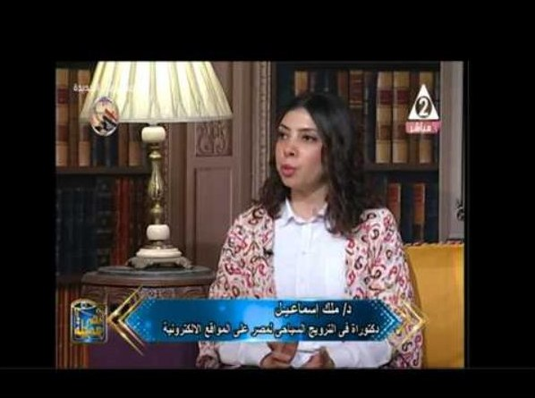
Egyptian Television Channel 2 16:36Dr. Malak Ismail discusses the role of digital marketing strategies in promoting Egypt as a medical tourism destination, highlighting destination branding, online communication channels, and opportunities to strengthen Egypt's global tourism positioning.
Watch Interview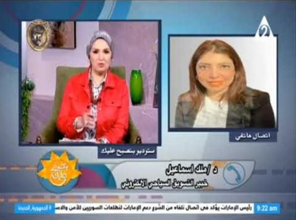
Egyptian Television Channel 2 4:58An expert analysis of how celebrity visits and influencer-driven storytelling can enhance Egypt's tourism brand visibility and create international digital engagement.
Watch Interview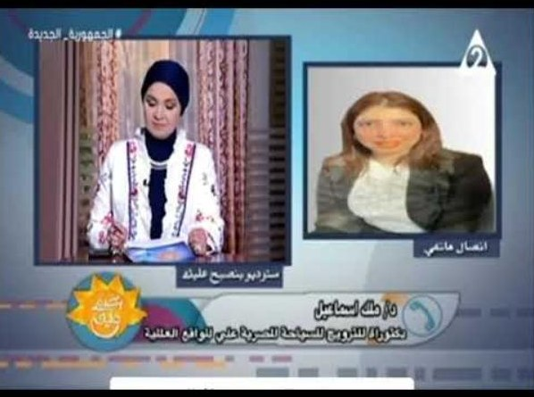
Egyptian Television Channel 2 3:38Dr. Malak Ismail explores the integration of emerging technologies, virtual reality experiences, and celebrity influence in modern tourism marketing strategies.
Watch Interview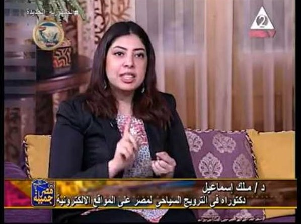
Masr Gameela Program 18:52A strategic discussion on building Egypt's tourism brand through official digital platforms, online presence management, and integrated communication strategies.
Watch InterviewA cross-sector portfolio spanning legal services, B2B technology, real estate, publishing, and international research.
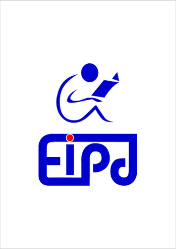
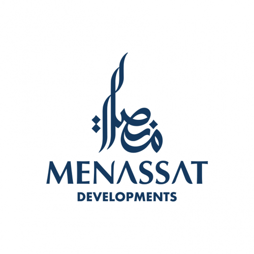
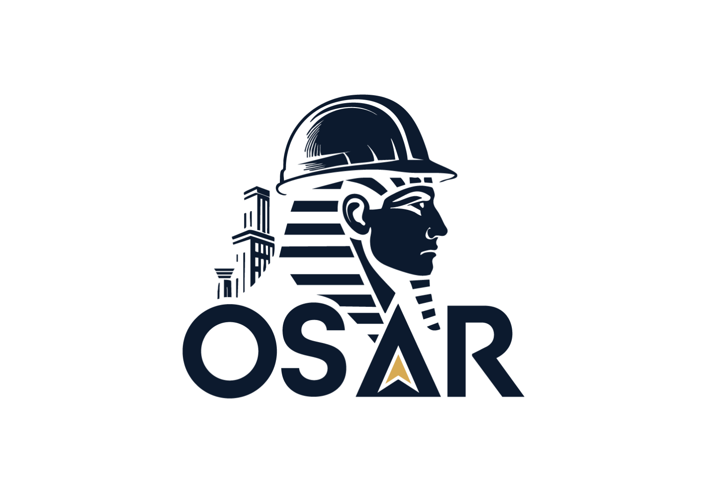
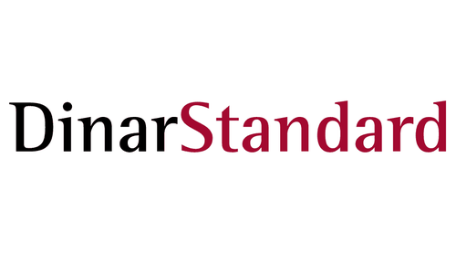
From ICT journalism to boardroom-level brand strategy — the complete 2013–2026 journey across journalism, media, human resources, public relations, and marketing leadership.
Covered the ICT sector and produced specialized interviews with technology and business leaders. Received the Best Specialized Press Interview Award (2014) from the Egyptian Journalists Syndicate, sponsored by Egypt's Ministry of Communications and Information Technology, for the interview with Bernard Pascal, General Manager of FedEx Egypt & the Middle East.
Led coverage and editorial activities related to the telecommunications and information technology sector.
Media relations, executive communications, and public event leadership for a national initiative.
Content and press strategy across digital and broadcast channels for a real estate portfolio; represented the company at Cityscape, Egypt's leading real estate exhibition.
Market research and campaign coordination for real estate development projects.
Built integrated marketing strategy and owned departmental budget to grow brand awareness and market share in a competitive publishing sector.
Built and executed national B2B marketing strategy aligned to Saudi Vision 2030; led rebrand guidelines, a 51-page corporate profile, and flagship event participation (LEAP Conference, IDC Cybersecurity Roadshow).
Led content quality and localization oversight for internationally published sector research, managing multi-month, multi-chapter review cycles with international editorial and design teams.
Defined-term instructor engagement teaching marketing, advertising, and public relations at university level.
Directed brand strategy and identity development for an independent client, delivering a complete end-to-end brand system — identity, stationery, and social presence, over a two-month engagement bridging AIC2 and MG Law.
Leading the firm's repositioning from transactional legal services to strategic business partner, with international market-entry messaging for Saudi, German, and U.S. audiences.
Detailed case narratives for these engagements are available on request — non-confidential highlights are summarized below.
Competitive intelligence, three-segment audience framework, and international market-entry messaging for Saudi, German, and U.S. audiences.
Details available on requestNational marketing strategy, rebrand guidelines, and B2B demand generation across NaaS, IaaS, and cybersecurity.
Details available on requestEnd-to-end brand identity, guidelines, stationery, and social presence delivered as an independent consulting engagement.
Details available on requestStrategic depth paired with hands-on execution across marketing, communications, research, and digital disciplines.
Flagship industry events, exhibitions, and media appearances across Egypt and Saudi Arabia.
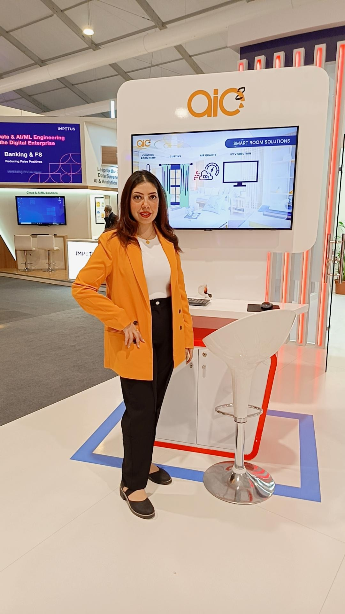
Directed AIC2's strategic participation, including concept development and partnership execution, at Saudi Arabia's flagship technology conference.
Owned brand presence and partnership execution for AIC2's participation in the regional cybersecurity roadshow.
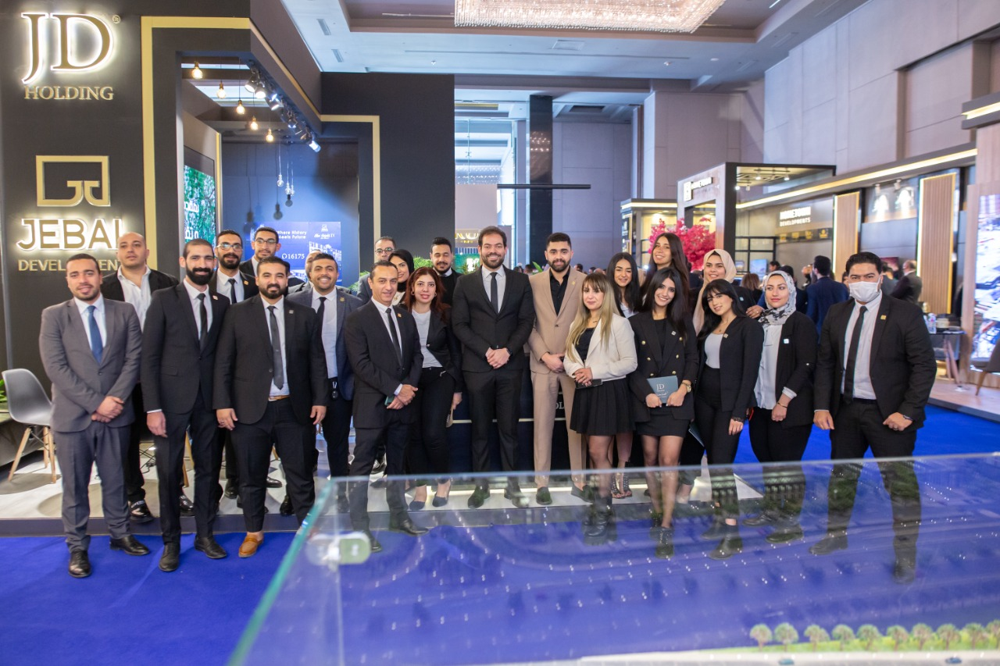
Represented JD Holding at Cityscape, Egypt's leading real estate exhibition, leading on-site content and brand presence.
Featured as a digital marketing expert on "بنصبح عليك" (tourism digital marketing, VR/AR) and "مصر جميلة" (medical tourism digital promotion).
An academic foundation that underpins a practitioner-led approach to brand strategy.
Advertising & Public Relations, International Marketing — Ain Shams University, Faculty of Arts. Dissertation: "Egypt's Brand Promotion Strategies on Official Tourism Websites."
Ain Shams University.
Broadcasting (Radio-Television) — Ain Shams University.
International Media Institute & Al-Shorouk Academy.
Digital Marketing Nanodegree (Udacity, 2023) · Claude for Business — AI for Strategic Marketing (Marketing Growth Hub) · Science Journalism (German Science Centre, Cairo) · First Line Management Track (egabi, under MCIT supervision) · Media Program Academy (Samsung Electronics Egypt).
Ain Shams University.
Original research and published works spanning digital marketing, brand strategy, and international sector research.
149-page published work on digital marketing, authored for practitioner and academic audiences.
BookPhD dissertation, Ain Shams University (2023, First Class Honors) — original research on national brand promotion strategy.
Doctoral ResearchOriginal LinkedIn thought-leadership article — a personal career-narrative reflection on communication, journalism, and marketing.
Thought LeadershipSpecialized interviews and ICT-sector reporting from Al-Qarar Al-Masry Economic Newspaper, including the award-winning Bernard Pascal (FedEx Egypt & the Middle East) interview.
Journalism Archive · Available on requestAchievements verified against CV, press coverage, and institutional records.
Egyptian Journalists Syndicate, sponsored by Egypt's Ministry of Communications and Information Technology (MCIT) — for the interview with Bernard Pascal, General Manager of FedEx Egypt & Middle East, published at Al-Qarar Al-Masry Economic Newspaper.
Ain Shams University.
Open to Marketing Director, Head of Marketing, Corporate Communications, or Media Leadership roles across Egypt and the GCC — as well as consulting and advisory engagements.